Chapter 20: Population, Urbanization, and the Environment¶
Introduction¶
Fracking, another word for hydraulic fracturing, is a method used to recover gas and oil from shale by drilling down into the earth and directing a high-pressure mixture of water, sand, and proprietary chemicals into the rock. While energy companies view fracking as a profitable revolution in the industry, there are a number of concerns associated with the practice.
First, fracking requires huge amounts of water. Water transportation comes at a high environmental cost. Once mixed with fracking chemicals, water is unsuitable for human and animal consumption, though it is estimated that between 10 percent and 90 percent of the contaminated water is returned to the water cycle. Second, the chemicals used in a fracking mix are potentially carcinogenic. These chemicals may pollute groundwater near the extraction site (Colborn, Kwiatkowski, Schultz, and Bachran 2011; United States 2011). Industry leaders suggest that such contamination is unlikely, and that when it does occur, it is incidental and related to unavoidable human error rather than an expected risk of the practice, but the U.S. Environmental Protection Agency’s study of fracking is ongoing (Environmental Protection Agency 2014). The third concern is that fracking causes minor earthquakes by undermining the seismic stability of an area, though far more induced earthquakes are caused by traditional oil and gas production (USGS n.d.) Finally, gas is not a renewable source of energy; this is a negative in the eyes of those who oppose continued reliance on fossil fuels.
Fracking is not without its advantages. Its supporters offer statistics that suggest it reduces unemployment and contributes to economic growth (IHS Global Insights 2012). Since it allows energy companies access to previously nonviable and completely untapped oil and gas reserves, fracking boosts domestic oil production and lowers energy costs (IHS Global Insights 2012). Finally, since natural gas is a lower-emission fuel than coal, fracking reduces the airborne environmental impacts of industrial energy.
One complexity of lower-priced natural gas production is that demand for coal has plummeted. Coal is both more expensive to produce and more environmentally damaging than natural gas, and the coal industry is concentrated in a few areas, such as Pennsylvania, West Virginia, and Kentucky. Automation had already depleted the employment opportunities in the industry; decades before fracking became widespread, coal companies began widespread replacement of people with machines (Vavra 2017). Although the U.S. was producing more coal than it had in previous decades, it was doing so with fewer workers than it ever had. At its peak, the coal industry employed nearly a million people, and its thriving towns drove other businesses. By 2015, the industry employs about 50,000 people (Money Illusion 2016). Inexpensive natural gas is just another factor that is contributing to the industry’s continued issues. Coal companies continually shutter, and entire regions are full of newly laid off workers who cannot find employment.
As you read this chapter, consider how an increasing global population can balance environmental concerns with opportunities for industrial and economic growth. Think about how much water pollution can be justified by the need to lower U.S. dependence of foreign energy supplies. Is the economic growth associated with fracking worth some environmental degradation? As we see a related industry – coal – further diminished due to fracking, do we owe its workers some compensation or additional support?
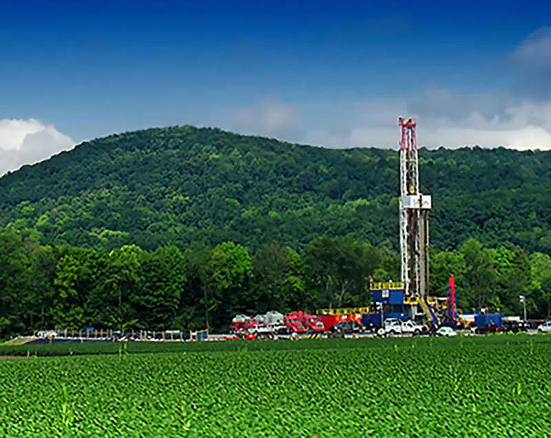
As the discussion of fracking illustrates, there are important societal issues connected to the environment and how and where people live. Sociologists begin to examine these issues through demography, or the study of population and how it relates to urbanization, the study of the social, political, and economic relationships in cities. Environmental sociologists look at the study of how humans interact with their environments. Today, as has been the case many times in history, we are at a point of conflict in a number of these areas. The world’s population reached seven billion between 2011 and 2012. When will it reach eight billion? Can our planet sustain such a population? We generate more trash than ever, from Starbucks cups to obsolete cell phones containing toxic chemicals to food waste that could be composted. You may be unaware of where your trash ends up. And while this problem exists worldwide, trash issues are often more acute in urban areas. Cities and city living create new challenges for both society and the environment that make interactions between people and places of critical importance.
How do sociologists study population and urbanization issues? Functionalist sociologists might focus on the way all aspects of population, urbanization, and the environment serve as vital and cohesive elements, ensuring the continuing stability of society. They might study how the growth of the global population encourages emigration and immigration, and how emigration and immigration serve to strengthen ties between nations. Or they might research the way migration affects environmental issues; for example, how have forced migrations, and the resulting changes in a region’s ability to support a new group, affected both the displaced people and the area of relocation? Another topic a functionalist might research is the way various urban neighborhoods specialize to serve cultural and financial needs.
A conflict theorist, interested in the creation and reproduction of inequality, might ask how peripheral nations’ lack of family planning affects their overall population in comparison to core nations that tend to have lower fertility rates. Or, how do inner cities become ghettos, nearly devoid of jobs, education, and other opportunities? A conflict theorist might also study environmental racism and other forms of environmental inequality. For example, which parts of New Orleans society were the most responsive to the evacuation order during Hurricane Katrina? Which area was most affected by the flooding? And where (and in what conditions) were people from those areas housed, both during and before the evacuation?
A symbolic interactionist interested in the day-to-day interaction of groups and individuals might research topics like the way family-planning information is presented to and understood by different population groups, the way people experience and understand urban life, and the language people use to convince others of the presence (or absence) of global climate change. For example, some politicians wish to present the study of global warming as junk science, and other politicians insist it is a proven fact.
20.1 Demography and Population¶
Learning Objectives
By the end of this section, you should be able to:
- Explain demographic measurements like fertility and mortality rates
- Describe a variety of demographic theories, such as Malthusian, cornucopian, zero population growth, and demographic transition theories
- Evaluate current population trends and patterns
- Differentiate between an internally displaced person, an asylum-seeker, and a refugee
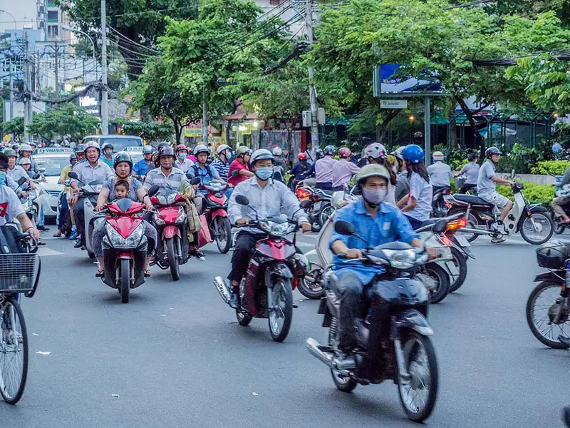
Between 2011 and 2012, we reached a population milestone of 7 billion humans on the earth’s surface. The rapidity with which this happened demonstrated an exponential increase from the time it took to grow from 5 billion to 6 billion people. In short, the planet is filling up. We'll have 8 billion people in this decade. While the population is increasing overall, there are certain countries and regions where growth is slowing. Relocation and migration also change the makeup and quantity of people in an area. In order to properly understand these dynamics and make decisions regarding them, we turn to demography, or the study of populations. Three critical aspects of demography are fertility, mortality, and migration.
The fertility rate of a society is a measure noting the number of children born. The fertility number is generally lower than the fecundity number, which measures the potential number of children that could be born to women of childbearing age. Sociologists measure fertility using the crude birthrate (the number of live births per 1,000 people per year). Just as fertility measures childbearing, the mortality rate is a measure of the number of people who die. The crude death rate is a number derived from the number of deaths per 1,000 people per year. When analyzed together, fertility and mortality rates help researchers understand the overall growth occurring in a population.
Another key element in studying populations is the movement of people into and out of an area. Migration may take the form of immigration, which describes movement into an area to take up permanent residence, or emigration, which refers to movement out of an area to another place of permanent residence. Migration might be voluntary (as when college students study abroad), involuntary (as when Syrians evacuated war-torn areas), or forced (as when many Native American tribes were removed from the lands they’d lived in for generations).
Big Picture: Mass Migration Crises
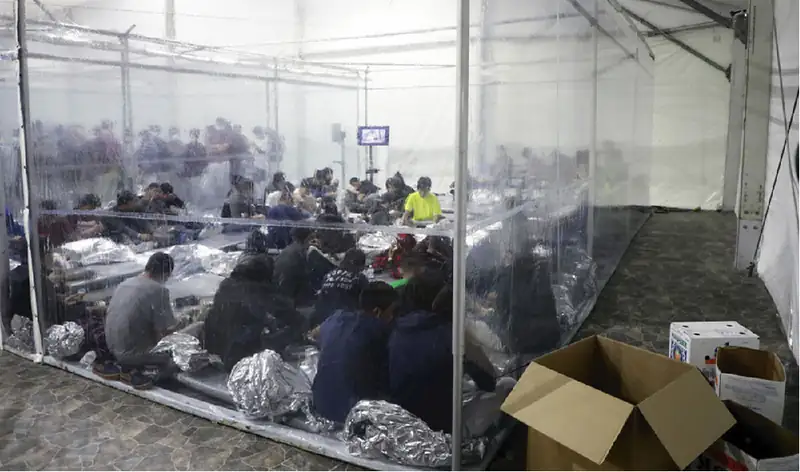
At least once during each of the last three Presidential administrations, the United States has faced a crisis at its southern border. While images of children in crowded holding areas, covered in piles of shiny plastic emergency blankets, were often associated with the Trump Presidency, Presidents Obama and Biden saw children in the same conditions. The holding facilities, described as cages by some and often referred to as “perreras” (dog kennels) or “hieleras” (ice boxes) by the migrating people, are meant to be temporary stopovers while people await hearings or related refugee processes. But during a number of occasions, the number of people crossing the border was so large – including, at times, tens of thousands of children – that the system became overwhelmed. The conditions are deplorable. The outcomes are uncertain. But the people cross the border anyway.
How did we get here? Bipartisan legislation passed in 2008 guarantees unaccompanied minors a hearing with an immigration judge where they may request asylum based on a “credible” fear of persecution or torture (U.S. Congress 2008). In some cases, these children are looking for relatives and can be placed with family while awaiting a hearing on their immigration status; in other cases, they become involved with the foster system or are placed in of the 170 housing facilities run by nonprofit or for-profit groups. Finally, for people who turn 18 while still in the process, they may be transferred to detention centers, sometimes on their birthday (Montoya-Galvez 2021). Many people in America were either accepting or unaware of these policies and situations until crises occurred in 2014 and 2018-19. At those points of incredible influxes of migrant children, border control, refugee services, and advocacy organizations were overwhelmed by the surge. Both the Obama and Trump administrations pushed for changes in laws or guidelines for enforcement (Gomez 2014 and Kanno-Youngs 2020).
The Obama administration sought to make the decision process faster. In 2014, over 50,000 unaccompanied minors were taken into custody, creating the backlog discussed above. The Trump administration sought to discourage immigration through policies such as separating parents and children who arrived together. The policy was decried by members of Trump's own party, as well as many other organizations, and was eventually dealt a series of legal blows before the President reversed it. Later investigations determined that hundreds, if not thousands, of children remained separated from their parents for extended periods of time (Spagat 2019).
While the situations at the border are extremely threatening to children's health and safety, people and policymakers in the United States are divided on how to address the situation. In many cases, these children are fleeing various kinds of violence and extreme poverty. The U.S. government has repeatedly indicated that the best way to avoid these crises is to address those conditions in the migrants' home countries. But even with financial aid for those nations and pressure on their governments to crack down on illegal activity, it is unlikely that the situation will change quickly or consistently. The Biden administration may not be the last to face a surge of immigrant children at its border.
A functional perspective theorist might focus on the dysfunctions caused by the sudden influx of underage asylum seekers, while a conflict perspective theorist might look at the way social stratification influences how the members of a developed country are treating the lower-status migrants from less-developed countries in Latin America. An interactionist theorist might see significance in the attitude of those protesting the presence of migrant children. Which theoretical perspective makes the most sense to you?
Population Growth¶
Changing fertility, mortality, and migration rates make up the total population composition, a snapshot of the demographic profile of a population. This number can be measured for societies, nations, world regions, or other groups. The population composition includes the sex ratio, the number of men for every hundred women, as well as the population pyramid, a picture of population distribution by sex and age (Figure 20.5).
![A population graph shows the percentage of people at each age and by gender. Ages 0 through 4 contains a total of 5.9 percent of the population, with 3 percent male and 2.9 percent female. Ages 20-24 has 6.8 percent of the total population, with 3.7 percent male and 3.5 percent female. Ages 50-54 has 6.4 percent of the population, and it is evenly split between male and female. Ages 70-74 has 4.1 percent of the population and 2.2 percent of that is female. Overall, the graph is relatively even for each age group with a slightly larger group at age 25-29, and beginning to get smaller starting at age 65. Ages older than 65 become progressively lower percentages of the population.](img/soc3e-20-01-03.webp)
Table 20.1 Varying Fertility and Mortality Rated by Country As the table illustrates, countries vary greatly in fertility rates and mortality rates—the components that make up a population composition. This data is from 2018, and changes occur continually. For example, in 2014, the number of children per adult woman in Afghanistan was 5.4 – generally an average of one more child per family. And the U.S. was slightly higher at 2.0 (World Bank 2019)
| Country | Population (in millions) | Fertility Rate (number of children per adult women) | Mortality Rate (per 1,000 births) | Sex Ratio Male to Female |
|---|---|---|---|---|
| Afghanistan | 38.4 | 4.4 | 48 | 1.05 |
| Finland | 5.52 | 1.4 | 2.0 | 1.04 |
| United States of America | 328.3 | 1.7 | 5.7 | 0.97 |
Comparing the three countries in Table 20.1 reveals that there are more men than women in Afghanistan and Finland, whereas the reverse is true in the United States. Afghanistan also has significantly higher fertility and mortality rates than either of the other two countries. In all three cases, the fertility rates have dropped in recent years, but Afghanistan's drop (from 5.4 children per woman to 4.4) will likely be the most impactful (World Bank 2019). Do these statistics surprise you? How do you think the population makeup affects the political climate and economics of the different countries?
Demographic Theories¶
Sociologists have long looked at population issues as central to understanding human interactions. Below we will look at four theories about population that inform sociological thought: Malthusian, zero population growth, cornucopian, and demographic transition theories.
Malthusian Theory¶
Thomas Malthus (1766–1834) was an English clergyman who made dire predictions about earth’s ability to sustain its growing population. According to Malthusian theory, three factors would control human population that exceeded the earth’s carrying capacity, or how many people can live in a given area considering the amount of available resources. Malthus identified these factors as war, famine, and disease (Malthus 1798). He termed them “positive checks” because they increase mortality rates, thus keeping the population in check. They are countered by “preventive checks,” which also control the population but by reducing fertility rates; preventive checks include birth control and celibacy. Thinking practically, Malthus saw that people could produce only so much food in a given year, yet the population was increasing at an exponential rate. Eventually, he thought people would run out of food and begin to starve. They would go to war over increasingly scarce resources and reduce the population to a manageable level, and then the cycle would begin anew.
Of course, this has not exactly happened. The human population has continued to grow long past Malthus’s predictions. So what happened? Why didn’t we die off? There are three reasons sociologists believe we are continuing to expand the population of our planet. First, technological increases in food production have increased both the amount and quality of calories we can produce per person. Second, human ingenuity has developed new medicine to curtail death from disease. Finally, the development and widespread use of contraception and other forms of family planning have decreased the speed at which our population increases. But what about the future? Some still believe Malthus was correct and that ample resources to support the earth’s population will soon run out.
Zero Population Growth¶
A neo-Malthusian researcher named Paul Ehrlich brought Malthus’s predictions into the twentieth century. However, according to Ehrlich, it is the environment, not specifically the food supply, that will play a crucial role in the continued health of the planet’s population (Ehrlich 1968). Ehrlich's ideas suggest that the human population is moving rapidly toward complete environmental collapse, as privileged people use up or pollute a number of environmental resources such as water and air. He advocated for a goal of zero population growth (ZPG), in which the number of people entering a population through birth or immigration is equal to the number of people leaving it via death or emigration. While support for this concept is mixed, it is still considered a possible solution to global overpopulation.
Cornucopian Theory¶
Of course, some theories are less focused on the pessimistic hypothesis that the world’s population will meet a detrimental challenge to sustaining itself. Cornucopian theory scoffs at the idea of humans wiping themselves out; it asserts that human ingenuity can resolve any environmental or social issues that develop. As an example, it points to the issue of food supply. If we need more food, the theory contends, agricultural scientists will figure out how to grow it, as they have already been doing for centuries. After all, in this perspective, human ingenuity has been up to the task for thousands of years and there is no reason for that pattern not to continue (Simon 1981).
Demographic Transition Theory¶
Whether you believe that we are headed for environmental disaster and the end of human existence as we know it, or you think people will always adapt to changing circumstances, we can see clear patterns in population growth. Societies develop along a predictable continuum as they evolve from unindustrialized to postindustrial. Demographic transition theory (Caldwell and Caldwell 2006) suggests that future population growth will develop along a predictable four-stage model.
In Stage 1, birth, death, and infant mortality rates are all high, while life expectancy is short. An example of this stage is the 1800s in the United States. As countries begin to industrialize, they enter Stage 2, where birth rates are higher while infant mortality and the death rates drop. Life expectancy also increases. Afghanistan is currently in this stage. Stage 3 occurs once a society is thoroughly industrialized; birth rates decline, while life expectancy continues to increase. Death rates continue to decrease. Mexico’s population is at this stage. In the final phase, Stage 4, we see the postindustrial era of a society. Birth and death rates are low, people are healthier and live longer, and society enters a phase of population stability. Overall population may even decline. For example, Sweden is considered to be in Stage 4.
The United Nations Population Fund (2008) categorizes nations as high fertility, intermediate fertility, or low fertility. The United Nations (UN) anticipates the population growth will triple between 2011 and 2100 in high-fertility countries, which are currently concentrated in sub-Saharan Africa. For countries with intermediate fertility rates (the United States, India, and Mexico all fall into this category), growth is expected to be about 26 percent. And low-fertility countries like China, Australia, and most of Europe will actually see population declines of approximately 20 percent. The graphs below illustrate this trend.
Changes in U.S. Immigration Patterns and Attitudes¶
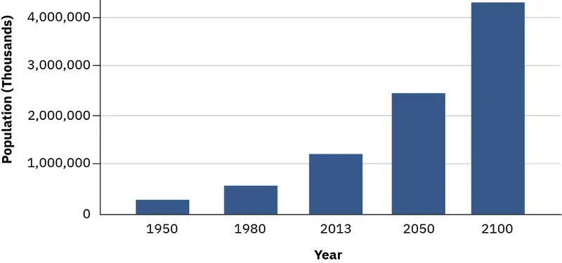
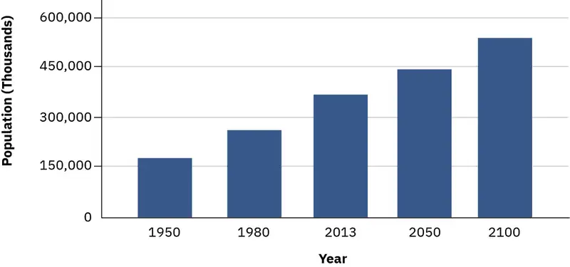
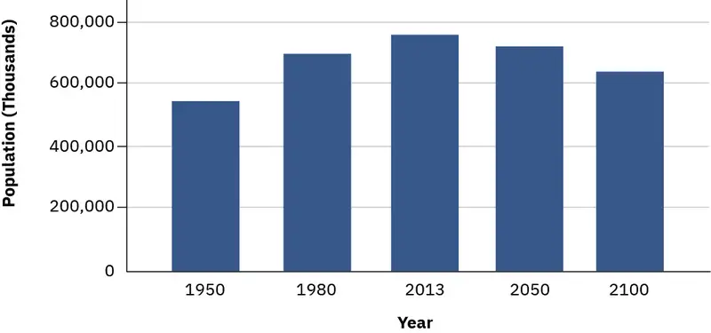
Worldwide patterns of migration have changed, though the United States remains the most popular destination. From 1990 to 2013, the number of migrants living in the United States increased from one in six to one in five (The Pew Research Center 2013). Overall, the United States is home to about 45 million foreign-born people, while only about 3 million U.S. citizens lived abroad. Of foreign-born citizens emigrating to the United States, 55 percent originated in Latin America and the Caribbean. However, over the past few years, more people from Asian countries have entered than from Latin American ones (Budiman 2020).
While there are more foreign-born people residing in the United States legally, as of 2017 about 10.5 million resided here without legal status (Budiman 2020). Most immigrants in the U.S. live in either Texas, Florida, or California.
Even before policy changes and COVID-19 affected refugee admittance, a relatively small number of people formally entered the country as refugees. In 2016, about 85,000 refugees were admitted to the U.S. (of over one million total immigrants), with the largest portion arriving from the Democratic Republic of Congo; in 2020, the number of refugees was reduced to 18,000.
Most citizens agree that our national immigration policies need adjustment. More than two-thirds (69 percent) of those in a recent national survey believed unauthorized immigrants should have a path to citizenship provided they meet other requirements, such as paying taxes and passing a background check. Even more people (72 percent) supported passing a DREAM Act, which would allow people who immigrated as children to earn citizenship. In both parts of the survey, majorities of both Republicans and Democrats as well as independents supported the pathway to citizenship (Vox and Data for Progress 2021).
20.2 Urbanization¶
Learning Objectives
By the end of this section, you should be able to:
- Describe the process of urbanization in the United States and the growth of urban populations worldwide
- Analyze the function of suburbs, exurbs, and concentric zones
- Discuss urbanization from various sociological perspectives
Urbanization is the study of the social, political, and economic relationships in cities, and someone specializing in urban sociology studies those relationships. In some ways, cities can be microcosms of universal human behavior, while in others they provide a unique environment that yields its own brand of human behavior. There is no strict dividing line between rural and urban; rather, there is a continuum where one bleeds into the other. However, once a geographically concentrated population has reached approximately 100,000 people, it typically behaves like a city regardless of what its designation might be.
The Growth of Cities¶
According to sociologist Gideon Sjoberg (1965), there are three prerequisites for the development of a city: First, good environment with fresh water and a favorable climate; second, advanced technology, which will produce a food surplus to support nonfarmers; and third, strong social organization to ensure social stability and a stable economy. Most scholars agree that the first cities were developed somewhere in ancient Mesopotamia, though there are disagreements about exactly where. Most early cities were small by today’s standards, and the largest was most likely Rome, with about 650,000 inhabitants (Chandler and Fox 1974). The factors limiting the size of ancient cities included lack of adequate sewage control, limited food supply, and immigration restrictions. For example, serfs were tied to the land, and transportation was limited and inefficient. Today, the primary influence on cities’ growth is economic forces. Since the recent economic recession reduced housing prices, researchers have been waiting to see what happens to urban migration patterns in response.
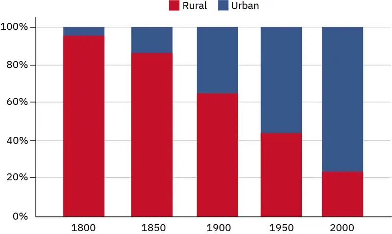
Urbanization in the United States¶
Urbanization in the United States proceeded rapidly during the Industrial Era. As more and more opportunities for work appeared in factories, workers left farms (and the rural communities that housed them) to move to the cities. From mill towns in Massachusetts to tenements in New York, the industrial era saw an influx of poor workers into U.S. cities. At various times throughout the country’s history, certain demographic groups, from post-Civil War southern Black people to more recent immigrants, have made their way to urban centers to seek a better life in the city.
Sociology in the Real World: Managing Refugees and Asylum-Seekers in the Modern World
In 2013, the number of refugees, asylum-seekers, and internally displaced people worldwide exceeded 50 million people for the first time since the end of World War II. Half these people were children. A refugee is defined as an individual who has been forced to leave his or her country in order to escape war, persecution, or natural disaster, while asylum-seekers are those whose claim to refugee status has not been validated. An internally displaced person, on the other hand, is neither a refugee nor an asylum-seeker. Displaced persons have fled their homes while remaining inside their country’s borders.
The war in Syria caused most of the 2013 increase, forcing 2.5 million people to seek refugee status while internally displacing an additional 6.5 million. Violence in Central African Republic and South Sudan also contributed a large number of people to the total (The United Nations Refugee Agency 2014).
The refugees need help in the form of food, water, shelter, and medical care, which has worldwide implications for nations contributing foreign aid, the nations hosting the refugees, and the non-government organizations (NGOs) working with individuals and groups on site (The United Nations Refugee Agency 2014). Where will this large moving population, including sick, elderly, children, and people with very few possessions and no long-term plan, go?
Suburbs and Exurbs¶
As cities grew more crowded, and often more impoverished and costly, more and more people began to migrate back out of them. But instead of returning to rural small towns (like they’d resided in before moving to the city), these people needed close access to the cities for their jobs. In the 1850s, as the urban population greatly expanded and transportation options improved, suburbs developed. Suburbs are the communities surrounding cities, typically close enough for a daily commute in, but far enough away to allow for more space than city living affords. The bucolic suburban landscape of the early twentieth century has largely disappeared due to sprawl. Suburban sprawl contributes to traffic congestion, which in turn contributes to commuting time. And commuting times and distances have continued to increase as new suburbs developed farther and farther from city centers. Simultaneously, this dynamic contributed to an exponential increase in natural resource use, like petroleum, which sequentially increased pollution in the form of carbon emissions.
As the suburbs became more crowded and lost their charm, those who could afford it turned to the exurbs, communities that exist outside the ring of suburbs and are typically populated by even wealthier families who want more space and have the resources to lengthen their commute. Together, the suburbs, exurbs, and metropolitan areas all combine to form a metropolis. New York was the first U.S. megalopolis, a huge urban corridor encompassing multiple cities and their surrounding suburbs. These metropolises use vast quantities of natural resources and are a growing part of the U.S. landscape.
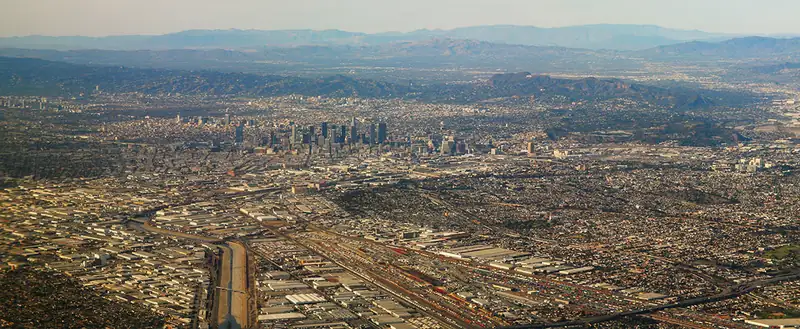
Social Policy and Debate: Suburbs Are Not All White Picket Fences: The Banlieues of Paris
What makes a suburb a suburb? Simply, a suburb is a community surrounding a city. But when you picture a suburb in your mind, your image may vary widely depending on which nation you call home. In the United States, most consider the suburbs home to upper— and middle—class people with private homes. In other countries, like France, the suburbs––or “banlieues”–– are synonymous with housing projects and impoverished communities. In fact, the banlieues of Paris are notorious for their ethnic violence and crime, with higher unemployment and more residents living in poverty than in the city center. Further, the banlieues have a much higher immigrant population, which in Paris is mostly Arabic and African immigrants. This contradicts the clichéd U.S. image of a typical white-picket-fence suburb.
In 2005, serious riots broke out in the banlieue of Clichy-sous-Bois after two boys were electrocuted while hiding from the police. They were hiding, it is believed, because they were in the wrong place at the wrong time, near the scene of a break-in, and they were afraid the police would not believe in their innocence. Only a few days earlier, interior minister Nicolas Sarkozy (who later became president), had given a speech touting new measures against urban violence and referring to the people of the banlieue as “rabble” (BBC 2005). After the deaths and subsequent riots, Sarkozy reiterated his zero-tolerance policy toward violence and sent in more police. Ultimately, the violence spread across more than thirty towns and cities in France. Thousands of cars were burned, many hundreds of people were arrested, and both police and protesters suffered serious injuries.
Then-President Jacques Chirac responded by pledging more money for housing programs, jobs programs, and education programs to help the banlieues solve the underlying problems that led to such disastrous unrest. But none of the newly launched programs were effective. Sarkozy ran for president on a platform of tough regulations toward young offenders, and in 2007 the country elected him. More riots ensued as a response to his election. In 2010, Sarkozy promised “war without mercy” against the crime in the banlieues (France24 2010). Six years after the Clichy-sous-Bois riot, circumstances are no better for those in the banlieues.
As the Social Policy & Debate feature illustrates, the suburbs also have their share of socio-economic problems. In the United States, White flight refers to the migration of economically secure White people from racially mixed urban areas and toward the suburbs. This occurred throughout the twentieth century, due to causes as diverse as the legal end of racial segregation established by Brown v. Board of Education to the Mariel boatlift of people fleeing Cuba for Miami. Current trends include middle-class African-American families following White flight patterns out of cities, while affluent White people return to cities that have historically had a majority of Black people. The result is that the issues of race, socio-economics, neighborhoods, and communities remain complicated and challenging.
Urbanization around the World¶
During the Industrial Era, there was a growth spurt worldwide. The development of factories brought people from rural to urban areas, and new technology increased the efficiency of transportation, food production, and food preservation. For example, from the mid-1670s to the early 1900s, London's population increased from 550,000 to 7 million (Old Bailey Proceedings Online 2011). Global favorites like New York, London, and Tokyo are all examples of postindustrial cities. As cities evolve from manufacturing-based industrial to service- and information-based postindustrial societies, gentrification becomes more common. Gentrification occurs when members of the middle and upper classes enter and renovate city areas that have been historically less affluent while the urban working poor are forced by resulting price pressures to leave those neighborhoods for increasingly decaying portions of the city.
Globally, 55 percent of the world’s people currently reside in urban areas, with the most urbanized region being North America (82 percent), followed by Latin America/the Caribbean (81 percent), with Europe coming in third (74 percent). In comparison, Africa is only 40 percent urbanized, though one of its nations, Nigeria, is projected to significantly urbanize in the coming years. With 37 million people, Tokyo is the world’s largest city by population, and New Delhi is the second largest with 29 million. The world’s most densely populated cities are now largely concentrated in the global south, a marked change from several decades ago when the biggest cities were found in the global north. In the next forty years, the biggest global challenge for urbanized populations, particularly in less developed countries, will be to achieve development that occurs without depleting or damaging the natural environment, also called sustainable development (United Nations 2018).
Theoretical Perspectives on Urbanization¶
The issues of urbanization play significant roles in the study of sociology. Race, economics, and human behavior intersect in cities. Let’s look at urbanization through the sociological perspectives of functionalism and conflict theory. Functional perspectives on urbanization generally focus on the ecology of the city, while conflict perspective tends to focus on political economy.
Human ecology is a functionalist field of study that looks at the relationship between people and their built and natural physical environments (Park 1915). Generally speaking, urban land use and urban population distribution occur in a predictable pattern once we understand how people relate to their living environment. For example, in the United States, we have a transportation system geared to accommodate individuals and families in the form of interstate highways built for cars. In contrast, most parts of Europe emphasize public transportation such as high-speed rail and commuter lines, as well as walking and bicycling. The challenge for a human ecologist working in U.S. urban planning is to design landscapes and waterscapes with natural beauty, while also figuring out how to provide for free-flowing transport of innumerable vehicles, not to mention parking!
The concentric zone model (Burgess 1925) is perhaps the most famous example of human ecology. This model views a city as a series of concentric circular areas, expanding outward from the center of the city, with various “zones” invading adjacent zones (as new categories of people and businesses overrun the edges of nearby zones) and succeeding (then after invasion, the new inhabitants repurpose the areas they have invaded and push out the previous inhabitants). In this model, Zone A, in the heart of the city, is the center of the business and cultural district. Zone B, the concentric circle surrounding the city center, is composed of formerly wealthy homes split into cheap apartments for new immigrant populations; this zone also houses small manufacturers, pawn shops, and other marginal businesses. Zone C consists of the homes of the working class and established ethnic enclaves. Zone D holds wealthy homes, white-collar workers, and shopping centers. Zone E contains the estates of the upper class (in the exurbs) and the suburbs.
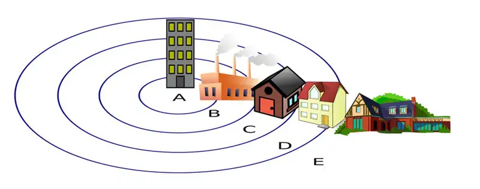
In contrast to the functionalist approach, theoretical models in the conflict perspective focus on the way urban areas change according to specific decisions made by political and economic leaders. These decisions generally benefit the middle and upper classes while exploiting the working and lower classes.
For example, sociologists Feagin and Parker (1990) suggested three factors by which political and economic leaders control urban growth. First, these leaders work alongside each other to influence urban growth and decline, determining where money flows and how land use is regulated. Second, exchange value and use value of land are balanced to favor the middle and upper classes so that, for example, public land in poor neighborhoods may be rezoned for use as industrial land. Finally, urban development is dependent on both structure (groups such as local government) and agency (individuals including businessmen and activists), and these groups engage in a push-pull dynamic that determines where and how land is actually used. For example, Not In My Back Yard (NIMBY) movements are more likely to emerge in middle and upper-class neighborhoods as engaged citizens protest poor environmental practices they fear will affect them, so these groups have more control over the use of local land.
20.3 The Environment and Society¶
Learning Objectives
By the end of this section, you should be able to:
- Describe climate change and its importance
- Apply the concept of carrying capacity to environmental concerns
- Explain the challenges presented by pollution, garbage, e-waste, and toxic hazards
- Discuss real-world instances of environmental racism
The subfield of environmental sociology studies the way humans interact with their environments. This field is closely related to human ecology, which focuses on the relationship between people and their built and natural environment. This is an area that is garnering more attention as extreme weather patterns and policy battles over climate change dominate the news. A key factor of environmental sociology is the concept of carrying capacity, which describes the maximum amount of life that can be sustained within a given area. While this concept can refer to grazing lands or to rivers, we can also apply it to the earth as a whole.
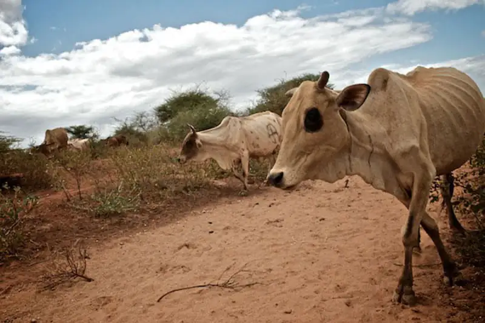
Big Picture: The Tragedy of the Commons
You might have heard the expression “the tragedy of the commons.” In 1968, an article of the same title written by Garrett Hardin described how a common pasture was ruined by overgrazing. But Hardin was not the first to notice the phenomenon. Back in the 1800s, Oxford economist William Forster Lloyd looked at the devastated public grazing commons and the unhealthy cattle subject to such limited resources, and saw, in essence, that the carrying capacity of the commons had been exceeded. However, since no one was held responsible for the land (as it was open to all), no one was willing to make sacrifices to improve it. Cattle grazers benefitted from adding more cattle to their herds, but they did not have to take on the responsibility of the lands that were being damaged by overgrazing. So there was an incentive for them to add more head of cattle, and no incentive for restraint.
Satellite photos of Africa taken in the 1970s showed this practice to dramatic effect. The images depicted a dark irregular area of more than 300 square miles. There was a large fenced area, where plenty of grass was growing. Outside the fence, the ground was bare and devastated. The reason was simple: the fenced land was privately owned by informed farmers who carefully rotated their grazing animals and allowed the fields to lie fallow periodically. Outside the fence was land used by nomads. Like the herdsmen in 1800s Oxford, the nomads increased their heads of cattle without planning for its impact on the greater good. The soil eroded, the plants died, then the cattle died, and, ultimately, some of the people died.
How does this lesson affect those of us who don’t need to graze our cattle? Well, like the cows, we all need food, water, and clean air to survive. With the increasing world population and the ever-larger megalopolises with tens of millions of people, the limit of the earth’s carrying capacity is called into question. When too many take while giving too little thought to the rest of the population, whether cattle or humans, the result is usually tragedy.
Climate Change¶
While you might be more familiar with the phrase “global warming,” climate change is the term now used to refer to long-term shifts in temperatures due to human activity and, in particular, the release of greenhouse gases into the environment. The planet as a whole is warming, but the term climate change acknowledges that the short-term variations in this process can include both higher and lower temperatures, despite the overarching trend toward warmth.
Climate change is a deeply controversial subject, despite decades of scientific research and a high degree of scientific consensus that supports its existence. For example, according to NASA scientists, 2020 essentially tied with 2016 as the warmest year on record, continuing the overall trend of increasing worldwide temperatures (NASA 2021). One effect of climate change is more extreme weather. There are increasingly more record-breaking weather phenomena, from the number of Category 4 hurricanes to the amount of snowfall in a given winter. These extremes, while they make for dramatic television coverage, can cause immeasurable damage to crops, property, and lives.
So why is there a controversy? Until relatively recently, the United States was very divided on the existence of climate change as an immediate threat, as well as whether or not human activity causes or contributes to it. But now it appears that the U.S. has joined the ranks of many countries where citizens are concerned about climate change; the nation is divided on what to do about it.
Research conducted in 2020 and 2021 indicated that at least 60 percent of Americans believe climate change is a real and immediate threat (UNDP 2021 and Global Strategy Group 2021). Citizens are also more supportive of clean energy and taking part in international efforts, such as the Paris Climate Accord, which is intended to engage countries in actions to limit the activity that leads to climate change. What's changed these opinions? It may be that younger people are more represented in these polls, and they tend to support climate change initiatives more consistently. It may be that the continued severity of weather and the costly and widespread impact is more difficult to ignore than it was previously. And part of the changing opinions might be driven by the prevalence of green energy sources, from wind power to solar power to electric cars, which are more evident to people across the country. However, deep divides remain. The addition of clean energy producers, such as offshore wind farms, typically meet stiff local opposition (similar to the "not in my backyard" discussion earlier in the chapter). And any punitive or price-raising methods of controlling emissions are unlikely to be welcome by U.S. citizens. Finally, global agreements like the Paris Accord will have limited impact because they are not strictly enforceable.
World systems analysis suggests that while, historically, core nations (like the United States and Western Europe) were the greatest source of greenhouse gases, they have now evolved into postindustrial societies. Industrialized semi-peripheral and peripheral nations are releasing increasing quantities of greenhouse gases, such as carbon dioxide. The core nations, now post-industrial and less dependent on greenhouse-gas-causing industries, wish to enact strict protocols regarding the causes of global warming, but the semi-peripheral and peripheral nations rightly point out that they only want the same economic chance to evolve their economies. Since they were unduly affected by the progress of core nations, if the core nations now insist on "green" policies, they should pay offsets or subsidies of some kind. There are no easy answers to this conflict. It may well not be "fair" that the core nations benefited from ignorance during their industrial boom.
Pollution¶
Pollution describes what happens when contaminants are introduced into an environment (water, air, land) at levels that are damaging. Environments can often sustain a limited amount of contaminants without marked change, and water, air, and soil can “heal” themselves to a certain degree. However, once contaminant levels reach a certain point, the results can be catastrophic.
Water¶
Typhoid, cholera, and diarrhea from unsafe water kill hundreds of thousands of children each year, and over 160 million children suffer from malnutrition and growth issues due to water issues. An estimated 3 billion people do not have access to clean water at home for hand-washing (CDC 2016). Consider the impact of that, knowing that many of those without water for hand-washing live in agricultural societies in which they work with animals or live in cities with many other people.
The water crisis is exacerbated by many of the other issues we've discussed. Global pandemics, pollution, and climate change all have more severe impacts when coupled with lack of access to clean water. Finally, the cost of obtaining that clean water can interfere with other important aspects of survival and social mobility. Children serve as water haulers, traveling long distances on foot to collect potable water for their family. Those same children (as well as those who similarly collect firewood) are less able to focus on their education, either missing school or not completing the associated work (Water.org 2021). Regular water hauling–which for some people involves carrying 20 kilograms (40 pounds) for 30 minutes or more–also has negative effects on people's bodies, especially pregnant women who often undertake the task. The situation is only getting more dire as the global population increases. Water is a key resource battleground in the twenty-first century.
As every child learns in school, 70 percent of earth is made of water. Despite that figure, there is a finite amount of water usable by humans and it is constantly used and reused in a sustainable water cycle. The way we use this abundant natural resource, however, renders much of it unsuitable for consumption and unable to sustain life. Oil and natural gas production, discussed at the beginning of the chapter, require so much water that there's no safe place to put the wastewater other than deep underground. But more common activities use far more water than many people understand. The immense amount of water to produce almonds (8 percent of California's water supply, equating to roughly one gallon per individual almond) has made headlines, as have the 37 gallons that it takes to produce a cup of coffee. But all crops and livestock have a "water footprint." Dairy milk is actually known to take more water to produce than does almond milk, for example. And steak may take up to 900 gallons of water to produce (WaterCalculuator.org 2020).
Those water costs are important to consider, particularly if the crops are produced in a part of the world where access to safe water is also an issue. But reducing irrigation water usage for U.S. crops would have very limited effects in sub-Saharan Africa. Most experts focus on improving water quality and sanitation in general, as well as reducing the distance people need to travel in order to obtain safe water.
Water pollution has always been a byproduct of industrialization, increased population, and urbanization. Cleveland's Cuyahoga River caught fire several times due to pollution, and was part of what inspired the United States' turn to cleaner water. Other countries are currently undergoing the same crises. As a consequence of population concentrations, water close to human settlements is frequently polluted with untreated or partially treated human waste (sewage), chemicals, radioactivity, and levels of heat sufficient to create large “dead zones” incapable of supporting aquatic life. The methods of food production used by many core nations rely on liberal doses of nitrogen and pesticides, which end up back in the water supply. In some cases, water pollution affects the quality of the aquatic life consumed by water and land animals. As we move along the food chain, the pollutants travel from prey to predator. Since humans consume at all levels of the food chain, we ultimately consume the carcinogens, such as mercury, accumulated through several branches of the food web.
Soil¶
You might have read The Grapes of Wrath in English class at some point in time. Steinbeck’s tale of the Joads, driven out of their home by the Dust Bowl, is still playing out today. In China, as in Depression-era Oklahoma, over-tilling soil in an attempt to expand agriculture has resulted in the disappearance of large patches of topsoil.
Soil erosion and desertification are just two of the many forms of soil pollution. In addition, all the chemicals and pollutants that harm our water supplies can also leach into soil with similar effects. Brown zones where nothing can grow are common results of soil pollution. One demand the population boom makes on the planet is a requirement for more food to be produced. The so-called “Green Revolution” in the 1960s saw chemists and world aid organizations working together to bring modern farming methods, complete with pesticides, to developing countries. The immediate result was positive: food yields went up and burgeoning populations were fed. But as time has gone on, these areas have fallen into even more difficult straits as the damage done by modern methods leave traditional farmers with less than they had to start.
Dredging certain beaches in an attempt to save valuable beachfront property from coastal erosion has resulted in greater storm impact on shorelines, and damage to beach ecosystems (Turneffe Atoll Trust 2008). These dredging projects have damaged reefs, sea grass beds, and shorelines and can kill off large swaths of marine life. Ultimately, this damage threatens local fisheries, tourism, and other parts of the local economy.
Garbage¶
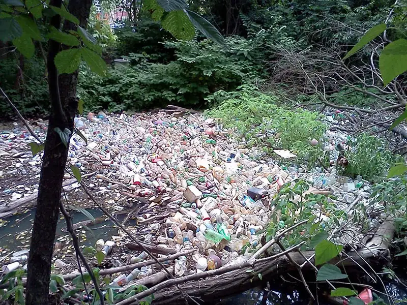
Where is your last cell phone? What about the one before that? Or the huge old television set your family had before flat screens became popular? For most of us, the answer is a sheepish shrug. We don’t pay attention to the demise of old items, and since electronics drop in price and increase in innovation at an incredible clip, we have been trained by their manufacturers to upgrade frequently.
Garbage creation and control are major issues for most core and industrializing nations, and it is quickly becoming one of the most critical environmental issues faced in the United States. People in the United States buy products, use them, and then throw them away. Did you dispose of your old electronics according to government safety guidelines? Chances are good you didn’t even know there are guidelines. Multiply your electronics times a few million, take into account the numerous toxic chemicals they contain, and then imagine either burying those chemicals in the ground or lighting them on fire.
Those are the two primary means of waste disposal in the United States: landfill and incineration. When it comes to getting rid of dangerous toxins, neither is a good choice. Styrofoam and plastics that many of us use every day do not dissolve in a natural way. Burn them, and they release carcinogens into the air. Their improper incineration (intentional or not) adds to air pollution and increases smog. Dump them in landfills, and they do not decompose. As landfill sites fill up, we risk an increase in groundwater contamination.
Big Picture: What Should Apple (and Friends) Do about E-Waste?
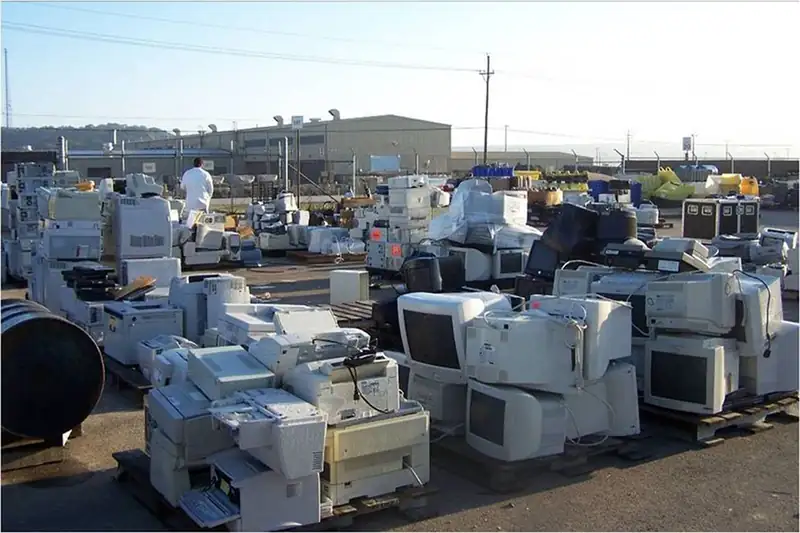
The mountains of broken plastic and rusty metal that plague the environment are not the most problematic types of garbage. E-waste or obsolete, broken, and worn-out electronics is the fastest growing segment of garbage production in the world. It is made up of household appliances, batteries, control devices, computers, phones, and similar products. Ironically, one of the largest potential e-waste problems will come from expended solar panels, which, although only a fraction of total waste, will require a complex recycling process (Stone 2020). All of these products have toxic chemicals and dangerous metals in them, as well as a significant amount of plastic that does not biodegrade.
So where do they go? Many companies ship their e-waste to developing nations in Africa and Asia to be “recycled.” While they are, in some senses, recycled, the result is not exactly clean. In fact, it is one of the dirtiest jobs around. Overseas, without the benefit of environmental regulation, e-waste dumps become a kind of boomtown for entrepreneurs willing to sort through endless stacks of broken-down electronics for tiny bits of valuable copper, silver, and other precious metals. Unfortunately, in their hunt, these workers are exposed to deadly toxins.
Governments are beginning to take notice of the impending disaster, and the European Union, as well as the state of California, put stricter regulations in place. These regulations both limit the amount of toxins allowed in electronics and address the issue of end-of-life recycling. But not surprisingly, corporations, while insisting they are greening their process, often fight stricter regulations. Meanwhile, many environmental groups, including the activist group Greenpeace, have taken up the cause. Greenpeace states that it is working to get companies to:
- measure and reduce emissions with energy efficiency, renewable energy, and energy policy advocacy
- make greener, efficient, longer lasting products that are free of hazardous substances
- reduce environmental impacts throughout company operations, from choosing production materials and energy sources right through to establishing global take-back programs for old products (Greenpeace 2011). Companies like Amazon, Samsung, Canon, Sprint, and Dell are noted for effective and forward-thinking programs (Sadoff 2019).
Air¶
China’s fast-growing economy and burgeoning industry have translated into notoriously poor air quality. Smog hangs heavily over the major cities, sometimes grounding aircraft that cannot navigate through it. Pedestrians and cyclists wear air-filter masks to protect themselves. In Beijing, citizens are skeptical that the government-issued daily pollution ratings are trustworthy. Increasingly, they are taking their own pollution measurements in the hopes that accurate information will galvanize others to action. Given that some days they can barely see down the street, they hope action comes soon (Papenfuss 2011).
Humanity, with its growing numbers, use of fossil fuels, and increasingly urbanized society, is putting too much stress on the earth’s atmosphere. The amount of air pollution varies from locale to locale, and you may be more personally affected than you realize. How often do you check air quality reports before leaving your house? Depending on where you live, this question can sound utterly strange or like an everyday matter. Along with oxygen, most of the time we are also breathing in soot, hydrocarbons, carbon, nitrogen, and sulfur oxides.
Much of the pollution in the air comes from human activity. How many college students move their cars across campus at least once a day? Who checks the environmental report card on how many pollutants each company throws into the air before purchasing a cell phone? Many of us are guilty of taking our environment for granted without concern for how everyday decisions add up to a long-term global problem. How many minor adjustments can you think of, like walking instead of driving, that would reduce your overall carbon footprint?
Remember the “tragedy of the commons.” Each of us is affected by air pollution. But like the herder who adds one more head of cattle to realize the benefits of owning more cows but who does not have to pay the price of the overgrazed land, we take the benefit of driving or buying the latest cell phones without worrying about the end result. Air pollution accumulates in the body, much like the effects of smoking cigarettes accumulate over time, leading to more chronic illnesses. And in addition to directly affecting human health, air pollution affects crop quality as well as heating and cooling costs. In other words, we all pay a lot more than the price at the pump when we fill up our tank with gas.
Toxic and Radioactive Waste¶
Radioactivity is a form of air pollution. While nuclear energy promises a safe and abundant power source, increasingly it is looked upon as a danger to the environment and to those who inhabit it. We accumulate nuclear waste, which we must then keep track of long term and ultimately figure out how to store the toxic waste material without damaging the environment or putting future generations at risk.
The 2011 earthquake in Japan illustrates the dangers of even safe, government-monitored nuclear energy. When disaster occurs, how can we safely evacuate the large numbers of affected people? Indeed, how can we even be sure how far the evacuation radius should extend? Radiation can also enter the food chain, causing damage from the bottom (phytoplankton and microscopic soil organisms) all the way to the top. Once again, the price paid for cheap power is much greater than what we see on the electric bill.
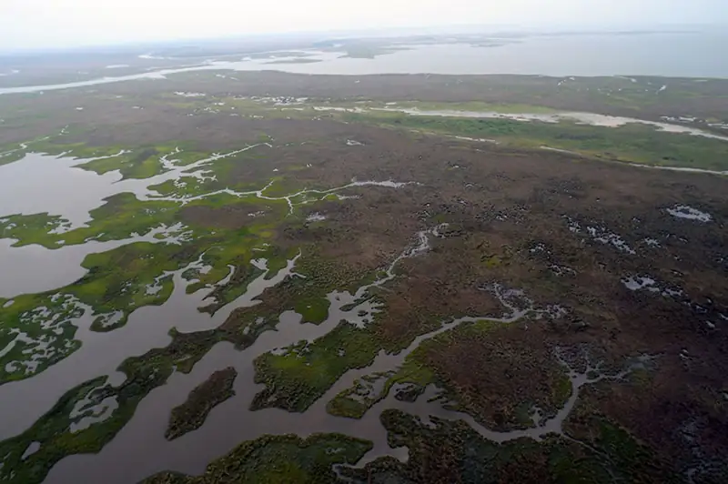
The enormous oil disaster that hit the Louisiana Gulf Coast in 2010 is just one of a high number of environmental crises that have led to toxic residue. They include the pollution of the Love Canal neighborhood of the 1970s to the Exxon Valdez oil tanker crash of 1989, the Chernobyl disaster of 1986, and Japan’s Fukushima nuclear plant incident following the earthquake in 2011. Often, the stories are not newsmakers, but simply an unpleasant part of life for the people who live near toxic sites such as Centralia, Pennsylvania and Hinkley, California. In many cases, people in these neighborhoods can be part of a cancer cluster without realizing the cause.
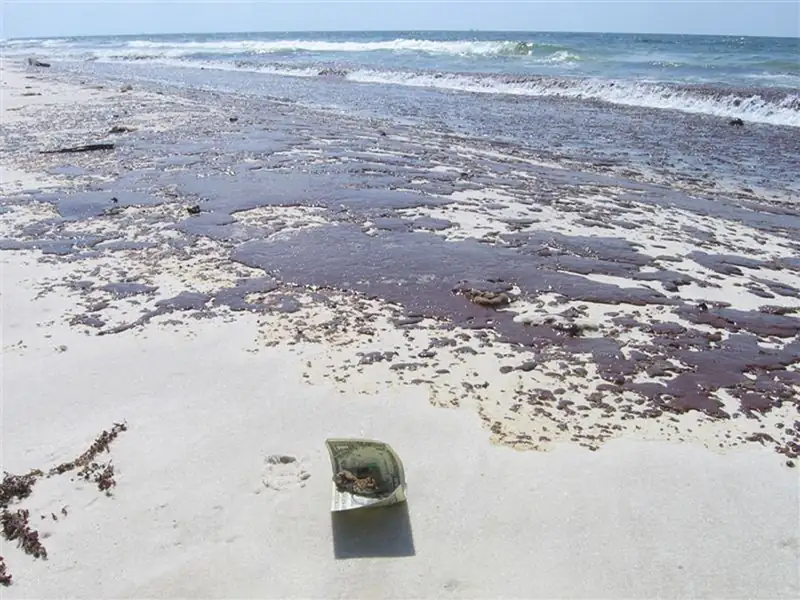
Sociology in the Real World: The Fire Burns On: Centralia, Pennsylvania
There used to be a place called Centralia, Pennsylvania. The town incorporated in the 1860s and once had several thousand residents, largely coal workers. But the story of its demise begins a century later in 1962. That year, a trash-burning fire was lit in the pit of the old abandoned coal mine outside of town. The fire moved down the mineshaft and ignited a vein of coal. It is still burning.
For more than twenty years, people tried to extinguish the underground fire, but no matter what they did, it returned. There was little government action, and people had to abandon their homes as toxic gases engulfed the area and sinkholes developed. The situation drew national attention when the ground collapsed under twelve-year-old Todd Domboski in 1981. Todd was in his yard when a sinkhole four feet wide and 150 feet deep opened beneath him. He clung to exposed tree roots and saved his life; if he had fallen a few feet farther, the heat or carbon monoxide would have killed him.
In 1983, engineers studying the fire concluded that it could burn for another century or more and could spread over nearly 4,000 acres. At this point, the government offered to buy out the town’s residents and wanted them to relocate to nearby towns. A few determined Centralians refused to leave, even though the government bought their homes, and they are the only ones who remain. In one field, signs warn people to enter at their own risk, because the ground is hot and unstable. And the fire burns on (DeKok 1986).
Environmental Racism¶
Environmental racism refers to the way in which minority group neighborhoods (populated primarily by people of color and members of low socioeconomic groups) are burdened with a disproportionate number of hazards, including toxic waste facilities, garbage dumps, and other sources of environmental pollution and foul odors that lower the quality of life. All around the globe, members of minority groups bear a greater burden of the health problems that result from higher exposure to waste and pollution. This can occur due to unsafe or unhealthy work conditions where no regulations exist (or are enforced) for poor workers, or in neighborhoods that are uncomfortably close to toxic materials.
The statistics on environmental racism are shocking. Research shows that it pervades all aspects of African Americans' lives: environmentally unsound housing, schools with asbestos problems, facilities and playgrounds with lead paint. A twenty-year comparative study led by sociologist Robert Bullard determined “race to be more important than socioeconomic status in predicting the location of the nation’s commercial hazardous waste facilities” (Bullard et al. 2007). His research found, for example, that Black children are five times more likely to have lead poisoning (the leading environmental health threat for children) than their White counterparts, and that a disproportionate number of people of color reside in areas with hazardous waste facilities (Bullard et al. 2007). Sociologists with the project are examining how environmental racism is addressed in the long-term cleanup of the environmental disasters caused by Hurricane Katrina.
Sociology in the Real World: Native American Tribes and Environmental Racism
Native Americans are unquestionably victims of environmental racism. The Commission for Racial Justice found that about 50 percent of all Native Americans live in communities with uncontrolled hazardous waste sites (Asian Pacific Environmental Network 2002). There’s no question that, worldwide, indigenous populations are suffering from similar fates.
For Native American tribes, the issues can be complicated—and their solutions hard to attain—because of the complicated governmental issues arising from a history of institutionalized disenfranchisement. Unlike other racial minorities in the United States, Native American tribes are sovereign nations. However, much of their land is held in “trust,” meaning that “the federal government holds title to the land in trust on behalf of the tribe” (Bureau of Indian Affairs 2012). Some instances of environmental damage arise from this crossover, where the U.S. government’s title has meant it acts without approval of the tribal government. Other significant contributors to environmental racism as experienced by tribes are forcible removal and burdensome red tape to receive the same reparation benefits afforded to non-Indians.
To better understand how this happens, let’s consider a few example cases. The home of the Skull Valley Band of Goshute Indians was targeted as the site for a high-level nuclear waste dumping ground, amid allegations of a payoff of as high as $200 million (Kamps 2001). Keith Lewis, an indigenous advocate for Native American rights, commented on this buyout, after his people endured decades of uranium contamination, saying that “there is nothing moral about tempting a starving man with money” (Kamps 2001). In another example, the Western Shoshone’s Yucca Mountain area has been pursued by mining companies for its rich uranium stores, a threat that adds to the existing radiation exposure this area suffers from U.S. and British nuclear bomb testing (Environmental Justice Case Studies 2004). In the “four corners” area where Colorado, Utah, Arizona, and New Mexico meet, a group of Hopi and Navajo families have been forcibly removed from their homes so the land could be mined by the Peabody Mining Company for coal valued at $10 billion (American Indian Cultural Support 2006). Years of uranium mining on the lands of the Navajo of New Mexico have led to serious health consequences, and reparations have been difficult to secure; in addition to the loss of life, people’s homes and other facilities have been contaminated (Frosch 2009). In yet another case, members of the Chippewa near White Pine, Michigan, were unable to stop the transport of hazardous sulfuric acid across reservation lands, but their activism helped bring an end to the mining project that used the acid (Environmental Justice Case Studies 2004).
These examples are only a few of the hundreds of incidents that Native American tribes have faced and continue to battle against. Sadly, the mistreatment of the land’s original inhabitants continues via this institution of environmental racism. How might the work of sociologists help draw attention to—and eventually mitigate—this social problem?
Why does environmental racism exist? The reason is simple. Those with resources can raise awareness, money, and public attention to ensure that their communities are unsullied. This has led to an inequitable distribution of environmental burdens. Another method of keeping this inequity alive is NIMBY protests. Chemical plants, airports, landfills, and other municipal or corporate projects are often the subject of NIMBY demonstrations. And equally often, the NIMBYists win, and the objectionable project is moved closer to those who have fewer resources to fight it.
Chapter Review¶
Key Terms¶
- asylum-seekers
- those whose claim to refugee status have not been validated
- cancer cluster
- a geographic area with high levels of cancer within its population
- carrying capacity
- the amount of people that can live in a given area considering the amount of available resources
- climate change
- long-term shifts in temperature and climate due to human activity
- concentric zone model
- a model of human ecology that views cities as a series of circular rings or zones
- cornucopian theory
- a theory that asserts human ingenuity will rise to the challenge of providing adequate resources for a growing population
- demographic transition theory
- a theory that describes four stages of population growth, following patterns that connect birth and death rates with stages of industrial development
- demography
- the study of population
- e-waste
- the disposal of broken, obsolete, and worn-out electronics
- environmental racism
- the burdening of economically and socially disadvantaged communities with a disproportionate share of environmental hazards
- environmental sociology
- the sociological subfield that addresses the relationship between humans and the environment
- exurbs
- communities that arise farther out than the suburbs and are typically populated by residents of high socioeconomic status
- fertility rate
- a measure noting the actual number of children born
- fracking
- hydraulic fracturing, a method used to recover gas and oil from shale by drilling down into the earth and directing a high-pressure mixture of water, sand, and proprietary chemicals into the rock
- gentrification
- the entry of upper- and middle-class residents to city areas or communities that have been historically less affluent
- human ecology
- a functional perspective that looks at the relationship between people and their built and natural environment
- internally displaced person
- someone who fled his or her home while remaining inside the country’s borders
- Malthusian theory
- a theory asserting that population is controlled through positive checks (war, famine, disease) and preventive checks (measures to reduce fertility)
- megalopolis
- a large urban corridor that encompasses several cities and their surrounding suburbs and exurbs
- metropolis
- the area that includes a city and its suburbs and exurbs
- mortality rate
- a measure of the number of people in a population who die
- NIMBY
- “Not In My Back Yard,” the tendency of people to protest poor environmental practices when those practices will affect them directly
- pollution
- the introduction of contaminants into an environment at levels that are damaging
- population composition
- a snapshot of the demographic profile of a population based on fertility, mortality, and migration rates
- population pyramid
- a graphic representation that depicts population distribution according to age and sex
- refugee
- an individual who has been forced to leave their country in order to escape war, persecution, or natural disaster
- sex ratio
- the ratio of men to women in a given population
- suburbs
- the communities surrounding cities, typically close enough for a daily commute
- sustainable development
- development that occurs without depleting or damaging the natural environment
- urban sociology
- the subfield of sociology that focuses on the study of urbanization
- urbanization
- the study of the social, political, and economic relationships of cities
- white flight
- the migration of economically secure white people from racially mixed urban areas toward the suburbs
- zero population growth
- a theoretical goal in which the number of people entering a population through birth or immigration is equal to the number of people leaving it via death or emigration
Summary¶
20.1 Demography and Population¶
Scholars understand demography through various analyses. Malthusian, zero population growth, cornucopian theory, and demographic transition theories all help sociologists study demography. The earth’s human population is growing quickly, especially in peripheral countries. Factors that impact population include birthrates, mortality rates, and migration, including immigration and emigration. There are numerous potential outcomes of the growing population, and sociological perspectives vary on the potential effect of these increased numbers. The growth will pressure the already taxed planet and its natural resources.
20.2 Urbanization¶
Cities provide numerous opportunities for their residents and offer significant benefits including access to goods to numerous job opportunities. At the same time, high population areas can lead to tensions between demographic groups, as well as environmental strain. While the population of urban dwellers is continuing to rise, sources of social strain are rising along with it. The ultimate challenge for today’s urbanites is finding an equitable way to share the city’s resources while reducing the pollution and energy use that negatively impacts the environment.
20.3 The Environment and Society¶
The area of environmental sociology is growing as extreme weather patterns and concerns over climate change increase. Human activity leads to pollution of soil, water, and air, compromising the health of the entire food chain. While everyone is at risk, poor and disadvantaged neighborhoods and nations bear a greater burden of the planet’s pollution, a dynamic known as environmental racism.
References¶
References
Colborn, Theo, Carol Kwiatkowski, Kim Schultz, and Mary Bachran. 2011. “Natural Gas Operations from a Public Health Perspective.” Human & Ecological Risk Assessment 17 (5): 1039-1056.
Environmental Protection Agency. 2014. “EPA’s Study of Hydraulic Fracturing and Its Potential Impact on Drinking Water Resources.” U.S. EPA, September 14. Retrieved October 29, 2014. (http://www2.epa.gov/hfstudy).
Henry, Terrence. 2012. “How Fracking Disposal Wells Are Causing Earthquakes in Dallas-Fort Worth.” Texas RSS. N.p., August 6. Retrieved October 29, 2014 (http://stateimpact.npr.org/texas/2012/08/06/how-fracking-disposal-wells-are-causing-earthquakes-in-dallas-fort-worth/).
IHS Global Insights. 2012. “The Economic and Employment Contributions of Unconventional Gas Development in State Economies.” Prepared for America’s Natural Gas Alliance, June 2012. Retrieved October 29, 2014 (http://www.anga.us/media/content/F7D4500D-DD3A-1073-DA3480BE3CA41595/files/state_unconv_gas_economic_contribution.pdf).
Money Illusion. 2016. “Coal jobs were lost to automation, not trade.” TheMoneyIllusion.com. December 21 2016. (https://www.themoneyillusion.com/coal-jobs-were-lost-to-automation-not-trade/)
USGS. “Does Fracking Cause Earthquakes.” United States Geological Survey. Retrieved April 1, 2021. (https://www.usgs.gov/faqs/does-fracking-cause-earthquakes)
Vavra, Shannon. 2017. “Mining By Machine: Automation Hits Coal Industry.” June 29 2017. (https://www.axios.com/mining-by-machine-automation-hits-coal-industry-1513303325-ba4cf237-d636-4987-88fc-0b277410fa79.html)
20.1 Demography and Population
Budiman, Abby. 2020. “Key Findings About US Immigrants.” Pew Research Center. August 20, 2020. (https://www.pewresearch.org/fact-tank/2020/08/20/key-findings-about-u-s-immigrants/)
Caldwell, John Charles and Bruce Caldwell. 2006. Demographic Transition Theory. The Netherlands: Springer.
CIA World Factbook. 2014. “Guide to Country Comparisons.” Central Intelligence Agency World Factbook. Retrieved October 31, 2014 (https://www.cia.gov/library/publications/the-world-factbook/rankorder/rankorderguide.html).
Colborn, Theo, Carol Kwiatkowski, Kim Schultz, and Mary Bachran. 2011. “Natural Gas Operations from a Public Health Perspective.” Human & Ecological Risk Assessment. 17 (5): 1039-1056
Connor, Phillip, D'Vera Cohn, and Ana Gonzalez-Barrera. 2013. “Changing Patterns of Global Migration and Remittances.” Pew Research Centers Social Demographic Trends Project RSS. N.p., Retrieved October 31, 2014 (http://www.pewsocialtrends.org/2013/12/17/changing-patterns-of-global-migration-and-remittances/).
Dart, Tom. 2014. "Child Migrants at Texas Border: An Immigration Crisis That's Hardly New." The Guardian [Houston]. www.theguardian.com. Guardian News and Media Limited. Retrieved October 30, 2014 (http://www.theguardian.com/world/2014/jul/09/us-immigration-undocumented-children-texas).
Ehrlich, Paul R. 1968. The Population Bomb. New York: Ballantine.
Environmental Protection Agency. 2014. "EPA's Study of Hydraulic Fracturing and Its Potential Impact on Drinking Water Resources." U.S. EPA, September 14. Retrieved October 29, 2014. (http://www2.epa.gov/hfstudy).
Fox News, and Associated Press. 2014. "Protests Turn Back Buses Carrying Illegal Immigrant Children." Fox News. FOX News Network. Retrieved October 30, 2014 (http://www.foxnews.com/us/2014/07/02/protests-force-buses-carrying-illegal-immigrant-children-to-be-rerouted/).
Gomez, Alan. 2014. "Obama Seeks Change to Law That Protects Immigrant Kids." USA Today. July 2 2014. (https://www.usatoday.com/story/news/nation/2014/07/02/immigration-obama-deportation-children-border/11915723/)
Henry, Terrence. 2012. "How Fracking Disposal Wells Are Causing Earthquakes in Dallas-Fort Worth." Texas RSS. N.p., August 6. Retrieved October 29, 2014 (http://stateimpact.npr.org/texas/2012/08/06/how-fracking-disposal-wells-are-causing-earthquakes-in-dallas-fort-worth/).
IHS Global Insights. 2012. "The Economic and Employment Contributions of Unconventional Gas Development in State Economies." Prepared for America's Natural Gas Alliance, June 2012. Retrieved October 29, 2014. (http://www.anga.us/media/content/F7D4500D-DD3A-1073-DA3480BE3CA41595/files/state_unconv_gas_economic_contribution.pdf).
Kanno-Youngs, Zolan and Maggie Haberman. 2020. “Trump Administration Moves to Solidify Restrictive Immigration Policies.” New York Times, June 12, 2020.
Malthus, Thomas R. 1965 [1798]. An Essay on Population. New York: Augustus Kelley.
Montoya-Galvez, Camilo. 2021. "The Facts About How The US Processes Unaccompanied Migrant Children At The Border." CBS News. February 25 2021. (https://www.cbsnews.com/news/unaccompanied-migrant-children-united-states-processing-housing/)
Passel, Jeffrey, D'Vera Cohn, and Ana Gonzalez-Barrera. 2013. "Population Decline of Unauthorized Immigrants Stalls, May Have Reversed." Pew Research Centers Hispanic Trends Project RSS. N.p., Retrieved October 31, 2014 (http://www.pewhispanic.org/2013/09/23/population-decline-of-unauthorized-immigrants-stalls-may-have-reversed/).
Pew Research Center. 2013. "Immigration: Key Data Points from Pew Research." Pew Research Center RSS. N.p., Retrieved October 31, 2014 (http://www.pewresearch.org/key-data-points/immigration-tip-sheet-on-u-s-public-opinion/).
Popescu, Roxana. 2014. "Frequently Asked Questions about the Migrant Crisis." U-T San Diego. San Diego Union-Tribue, Retrieved October 31, 2014 (http://www.utsandiego.com/news/2014/jul/22/Migrant-crisis-FAQ/).
Reyes, Raul A. 2014. "Murrieta Immigration Protests Were Unfortunate, Unnecessary." The Huffington Post. TheHuffingtonPost.com, Retrieved October 31, 2014 (http://www.huffingtonpost.com/raul-a-reyes/murrieta-immigration-prot_b_5569351.html).
Simon, Julian Lincoln. 1981. The Ultimate Resource. Princeton, NJ: Princeton University Press.
Spagat, Elliot. 2019. "US Sees Limitations on Reuniting Migrant Families." Associated Press. February 2 2019. (https://apnews.com/article/48210bbf243e423ea151ff04e4878ce6)
The United Nations Refugee Agency. 2014. "World Refugee Day: Global Forced Displacement Tops 50 Million for First Time in Post-World War II Era." UNHCR News. N.p., Retrieved October 31, 2014 (http://www.unhcr.org/53a155bc6.html).
U.S. Congress. 2008. The William Wilberforce Trafficking Victims Protection Reauthorization Act of 2008. 7311, 110 Cong., U.S. G.P.O. (enacted). Print.
World Bank. 2019. "Fertility Rate." "Mortality Rate." The World Bank Data. Retrieved April 1, 2021. (https://data.worldbank.org/indicator/SP.DYN.TFRT.IN)
Vox and Data for Progress. 2021. "Biden Immigration Agenda Survey Results." Files for Progress. (https://www.filesforprogress.org/datasets/2021/2/dfp-vox-biden-immigration-agenda.pdf)
20.2 Urbanization
BBC. 2005. “Timeline: French Riots—A Chronology of Key Events.” November 14. Retrieved December 9, 2011 (http://news.bbc.co.uk/2/hi/europe/4413964.stm).
Burgess, Ernest. 1925. “The Growth of the City.” Pp. 47–62 in The City, edited by R. Park and E. Burgess. Chicago: University of Chicago Press.
Chandler, Tertius and Gerald Fox. 1974. 3000 Years of Urban History. New York: Academic Press.
Dougherty, Connor. 2008. “The End of White Flight.” Wall Street Journal, July 19. Retrieved December 12, 2011 (http://online.wsj.com/article/SB121642866373567057.html).
Feagin, Joe, and Robert Parker. 1990. Building American Cities: The Urban Real Estate Game. 2nd ed. Englewood Cliffs, NJ: Prentice Hall.
France24. 2010. “Sarkozy Promises War without Mercy for Paris Suburbs.” France 24, April 10. Retrieved December 9, 2011 (http://www.france24.com/en/20100420-sarkozy-war-suburbs-drugs-crime-violence-truancy-tremblay-en-france-saint-denis-france).
LeBlanc, Adrien Nicole. 2003. Random Family: Love, Drugs, Trouble and Coming of Age in the Bronx. New York: Scribner.
Park, Robert. 1934 [1915]. “The City: Suggestions for Investigations of Human Behavior in the City.” American Journal of Sociology 20:577–612.
Park, Robert. 1936. “Human Ecology.” American Journal of Sociology 42:1–15.
Old Bailey Proceedings Online. 2011. “Population History of London.” Retrieved December 11, 2011 (http://www.oldbaileyonline.org/static/Population-history-of-london.jsp).
Sciolino, Elaine, and Ariane Bernand. 2006. “Anger Festering in French Areas Scarred in Riots.” New York Times, October 21. Retrieved December 11, 2011 (http://www.nytimes.com/2006/10/21/world/europe/21france.html?scp=2&sq=paris+suburb&st=nyt).
Sjoberg, Gideon. 1965. The Preindustrial City: Past and Present. New York: Free Press.
Talbot, Margaret. 2003. “Review: Random Family. Love, Drugs, Trouble and Coming of Age in the Bronx.” New York Times, February 9. Retrieved December 12, 2011 (http://www.nytimes.com/2003/02/09/books/in-the-other-country.html?pagewanted=all&src=pm).
United Nations, Department of Economic and Social Affairs, Population Division. 2014. “World Urbanization Prospects: The 2014 Revision, Highlights” (ST/ESA/SER.A/352). Retrieved November 3, 2014 (http://esa.un.org/unpd/wup/Highlights/WUP2014-Highlights.pdf).
United Nations, Department of Economic and Social Affairs, Population Division. 2018. "68% of the world population projected to live in urban areas by 2050, says UN." May 16, 2018. (https://www.un.org/development/desa/en/news/population/2018-revision-of-world-urbanization-prospects.html)
United States Census Bureau. 2014, "2010 Census Urban and Rural Classification and Urban Area Criteria." Retrieved December 16, 2014 (http://www.census.gov/geo/reference/ua/urban-rural-2010.html).
20.3 The Environment and Society
American Indian Cultural Support. 2006. “Short History of Big Mountain—Black Mesa.” Retrieved January 22, 2012 (http://www.aics.org/BM/bm.html).
Bertolucci, Jeff. 2009. “How Green Is Your Apple?” Macworld, April 22. Retrieved December 14, 2011 (http://www.macworld.com/article/140122/2009/04/greenapple3.html).
Blanchard, Ben. 2007. “Coke Vows to Reduce Water Used in Drink Production.” Reuters, June 5. Retrieved December 14, 2011 (http://www.reuters.com/article/2007/06/05/environment-coke-water-dc-idUSSP28630420070605).
Bullard, Robert D., Paul Mohai, Robin Saha, and Beverly Wright. 2007. Toxic Wastes and Race at Twenty: 1987–2007. United Church of Christ Commission for Racial Justice. Retrieved January 22, 2012 (http://www.ucc.org/assets/pdfs/toxic20.pdf).
Bureau of Indian Affairs. 2012. “FAQs.” Retrieved January 22, 2012 (http://www.bia.gov/FAQ/index/htm).
Centers for Disease Control. 2016. "Global WASH Fast Facts." Updated 2016. (https://www.cdc.gov/healthywater/global/wash_statistics.html)
DeKok, David. 1986. Unseen Danger: A Tragedy of People, Government, and the Centralia Mine Fire. Philadelphia, PA: University of Pennsylvania Press.
Environmental Justice Case Studies. 2004. University of Michigan. Retrieved January 22, 2012 (http://www.umich.edu/~snre492/cses.html).
Frosch, Dan. 2009. “Uranium Contamination Haunts Navajo Country.” New York Times, July 27. Retrieved January 22, 2012 (http://www.newyorktimes.com/2009/07/27/us/navajo.html).
Greenpeace. 2011. “Greenpeace Guide to Greener Electronics.” November. Retrieved December 13, 2011 (http://www.greenpeace.org/international/en/campaigns/toxics/electronics).
Greenpeace. 2012. "Greenpeace Guide to Greener Electronics." November. Retrieved December 17, 2014 (http://www.greenpeace.org/international/en/campaigns/climate-change/cool-it/Campaign-analysis/Guide-to-Greener-Electronics/).
Hardin, Garrett. 1968. “The Tragedy of the Commons,” Science 162(3859):1243–1248. Retrieved December 10, 2011 (http://www.sciencemag.org/content/162/3859/1243.full).
Kamps, Kevin. 2001. “Environmental Racism, Tribal Sovereignty and Nuclear Waste.” Nuclear Information and Resource Service. Retrieved January 22, 2012 (http://www.nirs.org/factsheets/pfsejfactsheet.htm).
NASA. 2014. “NASA Finds 2013 Sustained Long-Term Climate Warming Trend.” NASA, January 21. Retrieved October 27, 2014(http://www.giss.nasa.gov/research/news/20140121/).
NASA. 2021. "2020 Tied for Warmest Year on Record, NASA Analysis Shows." January 14 2021. (https://www.nasa.gov/press-release/2020-tied-for-warmest-year-on-record-nasa-analysis-shows)
Ogunseitanl, Oladele, Julie M. Stoning, Jean-Daniel M. Sapphires, and Andrew A. Shapiro. 2009. “The Electronics Revolution: From E-Wonderland to E-Wasteland.” Science 326(5953):670–671. Retrieved December 14, 2011 (http://www.sciencemag.org/content/326/5953/670.summary).
Papenfuss, Mary. 2011. “Cynical Chinese Taking Own Smog Readings.” Newser, December 8. Retrieved January 23, 2012 (http://www.newser.com/story/134966/cynical-chinese-taking-own-smog-readings.html).
Sadoff E-Recycling. 2019. "Electronics Recycling and Business." September 17, 2019. (https://sadoffelectronicsrecycling.com/blog/4-companies-electronic-recycling/)
Stone, Maddie. 2020. "Solar Panels Are Starting to Die, Leaving Behind Toxic Trash." Wired. August 22 2020. (https://www.wired.com/story/solar-panels-are-starting-to-die-leaving-behind-toxic-trash/)
Troilo, Pete. 2012. "Yes, We Can? Obama's Global Climate Change Initiative." International Development. Devex, January 30. Retrieved October 27, 2014 (https://www.devex.com/news/yes-we-can-obama-s-global-climate-change-initiative-77363).
Turneffe Atoll Trust. 2008. “Improper Development: Recommendations of the Turneffe Atoll Coastal Advisory Committee.” Retrieved December 14, 2011 (http://www.turneffeatoll.org/threats-to-turneffe-atoll/improper-development-practices).
UNDP. 2021. "The People's Climate Vote." United Nations Development Programme. January 26 2021. (https://www.undp.org/content/undp/en/home/librarypage/climate-and-disaster-resilience-/The-Peoples-Climate-Vote-Results.html)
United States. 2011. “Chemicals Used in Hydraulic Fracturing.” Washington, D.C: U.S. House of Representatives, Committee on Energy and Commerce. Retrieved October 29, 2014 (http://democrats.energycommerce.house.gov/sites/default/files/documents/Hydraulic%20Fracturing%20Report%204.18.11.pdf).
Water.org. 2021. "The Water Crisis." Retrieved April 1 2021. (https://water.org/our-impact/water-crisis/)
WaterCalculator.org. 2020. "Food's Big Water Footprint." April 25 2020. (https://www.watercalculator.org/footprint/foods-big-water-footprint/)
Section Quiz¶
20.1 Demography and Population¶
1. The population of the planet doubled in fifty years to reach _______ in 1999?
- 6 billion
- 7 billion
- 5 billion
- 10 billion
Answer
A
2. A functionalist would address which issue?
- The way inner-city areas become ghettoized and limit availability to jobs
- The way immigration and emigration trends strengthen global relationships
- The way racism and sexism impact the population composition of rural communities
- The way humans interact with environmental resources on a daily basis
Answer
B
3. What does carrying capacity refer to?
- The ability of a community to welcome new immigrants
- The capacity for globalism within a given ethnic group
- The amount of life that can be supported sustainably in a particular environment
- The amount of weight that urban centers can bear if vertical growth is mandated
Answer
C
4. What three factors did Malthus believe would limit human population?
- Self-preservation, old age, and illness
- Natural cycles, illness, and immigration
- Violence, new diseases, and old age
- War, famine, and disease
Answer
D
5. What does cornucopian theory believe?
- That human ingenuity will solve any issues that overpopulation creates
- That new diseases will always keep populations stable
- That the earth will naturally provide enough for whatever number of humans exist
- That the greatest risk is population reduction, not population growth
Answer
A
20.2 Urbanization¶
6. In the concentric zone model, Zone B is likely to house what?
- The city’s industrial center
- Wealthy commuter homes
- Formerly wealthy homes split into cheap apartments
- Rural outposts
Answer
C
7. What are the prerequisites for the existence of a city?
- Good environment with water and a favorable climate
- Advanced agricultural technology
- Strong social organization
- All of the above
Answer
D
8. In 2014, what was the largest city in the world?
- Delhi
- New York
- Shanghai
- Tokyo
Answer
D
9. What led to the creation of the exurbs?
- Urban sprawl and crowds moving into the city
- The high cost of suburban living
- The housing boom of the 1980s
- Gentrification
Answer
A
10. How are the suburbs of Paris different from those of most U.S. cities?
- They are connected by public transportation.
- There are more industrial and business opportunities there.
- They are synonymous with housing projects and urban poor.
- They are less populated.
Answer
C
11. How does gentrification affect cities?
- They become more crowded.
- Less affluent residents are pushed into less desirable areas.
- Traffic issues, including pollution, become worse.
- All of the above
Answer
B
12. What does human ecology theory address?
- The relationship between humans and their environments
- The way humans affect technology
- The way the human population reduces the variety of nonhuman species
- The relationship between humans and other species
Answer
A
13. Urbanization includes the sociological study of what?
- Urban economics
- Urban politics
- Urban environments
- All of the above
Answer
D
20.3 The Environment and Society¶
14. The “tragedy of the commons” is a reference to what?
- Global warming
- African landowners
- The common grazing lands in Oxford
- The misuse of private space
Answer
C
15. What are ways that human activity impacts the water supply?
- Creating sewage
- Spreading chemicals
- Increasing radioactivity
- All of the above
Answer
D
16. Which is an example of environmental racism?
- The fact that a disproportionate percentage of people of color live in environmentally hazardous areas
- Greenpeace protests
- The prevalence of asbestos in formerly “whites only” schools
- Prejudice similar to racism against people with different environmental views than one’s own
Answer
A
17. What is not a negative outcome of shoreline dredging?
- Damaged coral reefs
- Death of marine life
- Ruined sea grass beds
- Reduction of human population
Answer
D
18. What are the two primary methods of waste disposal?
- Landfill and incineration
- Incineration and compost
- Decomposition and incineration
- Marine dumping and landfills
Answer
A
19. Where does a large percentage of e-waste wind up?
- Incinerators
- Recycled in peripheral nations
- Repurposed into new electronics
- Dumped into ocean repositories
Answer
B
20. What types of municipal projects often result in environmental racism?
- Toxic dumps or other objectionable projects
- The location of schools, libraries, and other cultural institutions
- Hospitals and other health and safety sites
- Public transportation options
Answer
A
Short Answer¶
20.1 Demography and Population¶
21. Given what we know about population growth, what do you think of China’s policy that limits the number of children a family can have? Do you agree with it? Why, or why not? What other ways might a country of over 1.3 billion people manage its population?
22. Describe the effect of immigration or emigration on your life or in a community you have seen. What are the positive effects? What are the negative effects?
23. What responsibility does the United States have toward underage asylum-seekers?
20.2 Urbanization¶
24. What are the differences between the suburbs and the exurbs, and who is most likely to live in each?
25. How will the growth in urban populations affect the world over the next ten years?
26. Considering the concentric zone model, what type of zone were you raised in? Is this the same or different as that of earlier generations in your family? What type of zone do you reside in now? Do you find that people from one zone stereotype those from another? If so, how?
20.3 The Environment and Society¶
27. After reading this section, will you change the way you treat your household waste? Explain.
28. How do you think the issue of e-waste should be dealt with? Should the responsibility fall to the companies that make the products or the consumer who buys them? Would your buying habits be different if you had to pay to recycle old electronics?
29. Can you think of a modern example of the tragedy of the commons, where public use without accountability has created a negative outcome?
30. NIMBY protests occur when concerned citizens band together to speak up against something that will impact them negatively. Is this a positive or negative trend? Give an example of a NIMBY protest and whether you support it or not.
Further Research¶
20.1 Demography and Population¶
To learn more about population concerns, from the new-era ZPG advocates to the United Nations reports, check out the Population Connection web site.
Explore an interactive version of the population pyramid for each country, and to see updates and changes over time: at this website.
20.2 Urbanization¶
Interested in learning more about the latest research in the field of human ecology? Visit the Society for Human Ecology web site to discover what’s emerging in this field.
Getting from place to place in urban areas might be more complicated than you think. Read the latest on pedestrian-traffic concerns at the Streetsblog web site.
20.3 The Environment and Society¶
Visit the Cleanups in My Community web site to see where environmental hazards have been identified in your backyard, and what is being done about them.
What is your carbon footprint? Find out using the carbon footprint calculator.
Find out using the water footprint calculator.
Adapted from Introduction to Sociology 3e by OpenStax, licensed under CC BY 4.0. Access the original for free at openstax.org. Changes: converted to the web reading format of The Open Book Project.